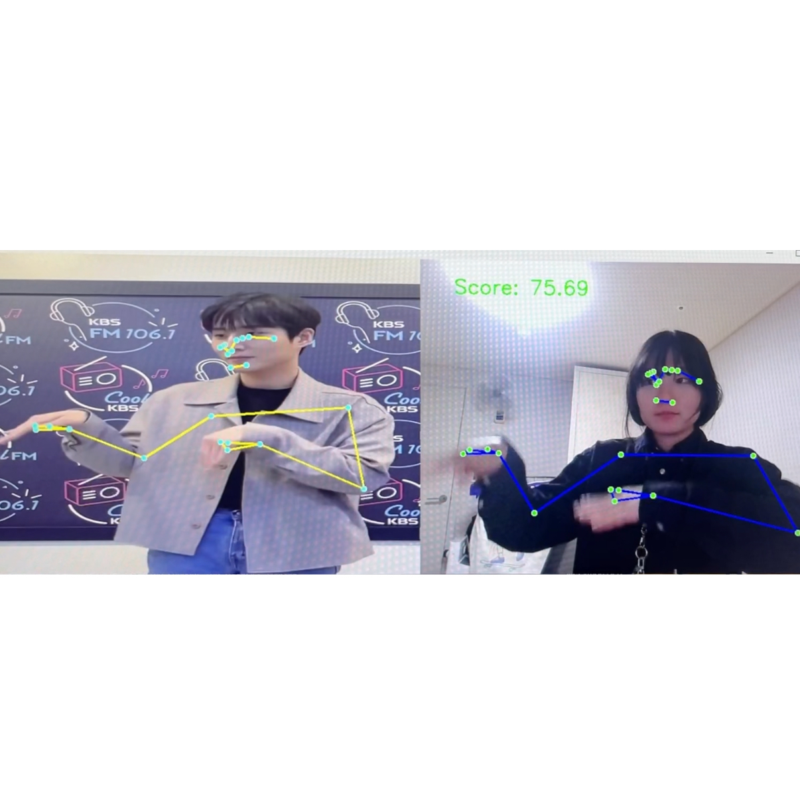

OpenCV & MediaPipe Pose 기반
포즈 키포인트 유사도 기반 춤 평가 시스템
(실시간 동작 정확도 분석)
Simple Dance 프로젝트는 웹캠을 통해 사용자의 춤 동작을 실시간으로 인식하고, 사전에 준비된 정답 춤 영상(reference dance video)과의 포즈 유사도를 비교하여 사용자의 춤 정확도를 점수로 평가하는 시스템입니다.
본 시스템은 OpenCV와 MediaPipe Pose를 활용하여 사람의 전신 관절 키포인트를 추출하고, 관절 위치 및 각도 정보를 기반으로 정답 동작과 사용자 동작의 유사도를 정량적으로 계산합니다.
본 프로젝트에서 해결하고자 한 핵심 질문은 다음과 같습니다.
“이 사용자의 춤 동작이 정답 영상과 얼마나 비슷한가?”
이를 위해 춤 동작을 특정 클래스나 레이블로 분류하지 않고, 프레임 단위의 포즈 키포인트 위치와 관절 각도를 직접 비교하는 방식으로 시스템을 설계하였습니다.
Reference Dance Video → MediaPipe Pose → Pose Keypoints (x, y, z) → JSON 저장
User Webcam Input → MediaPipe Pose → Pose Keypoints (x, y, z)
→ 거리 + 각도 기반 유사도 계산 → 실시간 점수 출력
정답 춤 영상은 프레임 단위로 분석되며, MediaPipe Pose를 사용하여 각 프레임에서 33개의 전신 관절 키포인트를 추출합니다.
추출된 각 관절의 (x, y, z) 좌표는 이후 실시간 비교를 위해 JSON 파일 형태로 저장됩니다.
웹캠 입력을 통해 사용자의 춤 동작을 실시간으로 처리하며, 기준 영상과 동일한 포즈 추출 파이프라인을 유지하여 일관된 비교가 가능하도록 설계하였습니다.
모든 관절을 동일하게 비교하는 대신, 춤 동작에서 중요한 관절에 가중치를 부여하였습니다.
이를 통해 춤의 핵심 동작이 최종 점수에 더 크게 반영되도록 하였습니다.
프레임 단위로 사용자 포즈와 기준 포즈의 키포인트 간 유클리디안 거리를 계산하여 위치 기반 오차를 산출합니다.
또한 팔꿈치 및 무릎 관절의 각도를 계산하여 단순 위치 비교로는 반영하기 어려운 동작의 형태 차이를 추가로 평가합니다.
프레임별 거리 오차와 각도 오차를 누적한 후, 이를 기반으로 0~100 사이의 점수로 변환합니다.
사용자는 실시간으로 자신의 춤 정확도를 화면을 통해 직관적으로 확인할 수 있습니다.
본 프로젝트는 MediaPipe Pose를 활용하여 사용자의 춤 동작을 기준 영상과 직접 비교·평가하는 인터랙티브 시스템을 성공적으로 구현한 사례입니다.
포즈 키포인트 위치와 각도 기반 유사도 계산을 통해, 단순 동작 인식을 넘어 춤의 정확도와 완성도를 평가할 수 있는 실시간 시스템을 완성하였습니다.